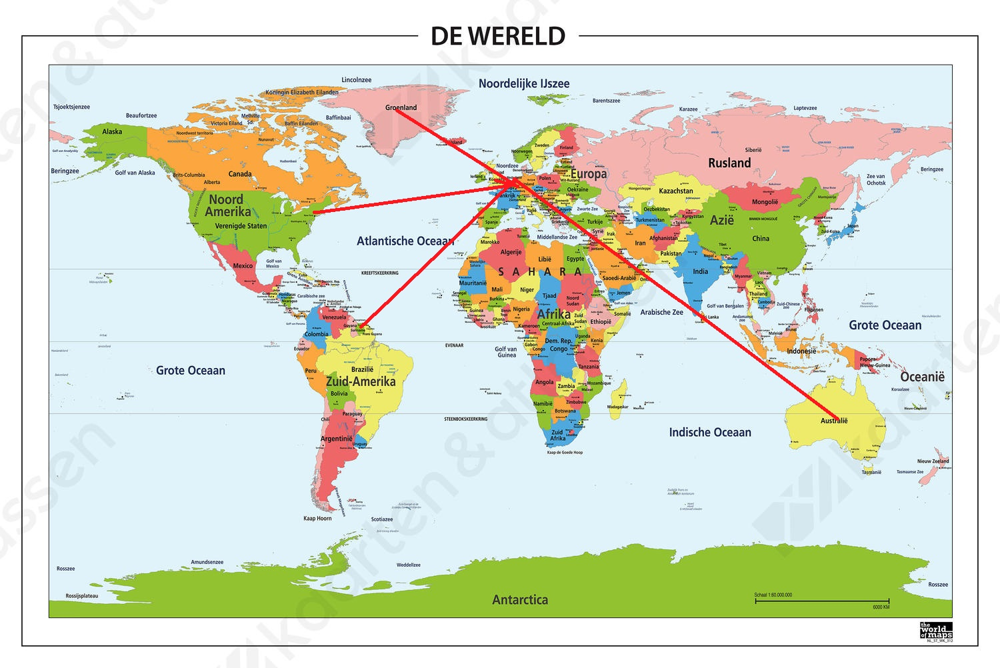

Wereldreis Klimaatgebeiden
(Aardrijkskunde PO)
Dit is onze website over een wereldreis door de 5 verschillende soorten klimaten:
Landklimaat, Zeeklimaat, Droog Klimaat, Tropisch klimaat en Poolklimaat. Gebruik de menu hierboven om naar de verschillende klimaatgebeiden te gaan.
Deze website is gemaakt door Hafsa & Leah op 22 Maart 2018.
Reiskaart
Dit is de kaart van onze reis naar de verschillende Klimaatgebeiden.
